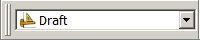

|
| Tutoriel |
|---|
| Introduction à la modélisation |
| Niveau |
| Débutant |
| Temps d'exécution estimé |
| 15 minutes |
| Auteur |
| NormandC |
| Version de FreeCAD |
| toutes |
| Fichier(s) exemple(s) |
| aucun |
Ce tutoriel d'introduction à la modélisation vous montrera comment modéliser un fer angle (cornière). Une chose à savoir, FreeCAD est modulaire, et comme pour plusieurs autres logiciels de CAO, il y a souvent plus d'une façon de faire les choses. Ici, nous explorerons deux méthodes.
Avant de commencer
Gardez en tête que FreeCAD est toujours à un stade précoce de développement, il est donc possible que vous ne soyez pas aussi productif qu'avec une autre application de CAO, et il est fort probable que vous rencontriez des bogues, ou subissiez des plantages. FreeCAD offre maintenant la possiblité de créer des fichiers de sauvegarde. Le nombre de ces fichiers peut être réglé dans le menu Édition > Préférences, onglet Document. N'hésitez pas à allouer deux ou trois fichiers de sauvegarde jusqu'à ce que vous soyez à l'aise avec FreeCAD.
Sauvegardez régulièrement votre travail, et de temps en temps, sauvegardez-le sous un nom différent afin d'avoir une copie sûre sur laquelle vous rabattre ; enfin, attendez-vous à la possibilité que certaines commandes ne vous donnent pas les résultats escomptés.
Introduction aux techniques de modélisation
La première technique (et celle de base) de la modélisation solide est la géométrie de construction de solides (GCS). Vous construisez votre géométrie à l'aide de formes primitives telles que des cubes, cylindres, sphères et cônes en les combinant, par soustraction d'une forme par une autre, ou par l'intersection de deux formes. Ces outils font partie de l'atelier Pièce. Vous pouvez également appliquer des transformations aux formes, par exemple des congés (arrondis) ou chanfreins à des arêtes. Ces outils sont également dans l'atelier Pièce.
Puis il y a des outils plus avancés. Vous commencez par dessiner une esquisse en 2D qu'ensuite vous extruderez ou ferez révolutionner.
Commençons par la création d'un pied en fer en L (cornière) pour fabriquer un établi, avec ces deux méthodes.
1ère méthode - par géométrie de construction de solides
- Commencer avec l'atelier Pièce (menu Affichage 🡢 Atelier 🡢 Part)
- Si vous n'avez pas créé un nouveau document FreeCAD (l'essentiel de la fenêtre de FreeCAD paraît alors grisée), aller dans le menu Fichier 🡢 Nouveau ou cliquer sur Créer un nouveau document vide
 .
. - Cliquer sur le bouton
 Boîte pour créer un cube
Boîte pour créer un cube - Changer ses dimensions en le sélectionnant soit dans la vue de modèle 3D, soit en cliquant sur l'onglet Projet à gauche, puis
- Cliquer sur l'onglet Données au bas du panneau latéral, et changer les valeurs de longueur (Length), largeur (Width) et hauteur (Height) à 50mm, 50 et 750 (voir Fig. 1.1) Note : depuis la création de ces images, l'ordre dans lequel les propriétés sont affichées a été changé ; la hauteur (Height) était listée en premier.
- Un parallélépipède remplit maintenant presque toute la vue 3D. Cliquer sur Tout afficher pour ajuster la vue au parallélépipède nouvellement créé.
- Créer un second parallélépipède de la même façon, mais avec des valeurs de long. = 40, larg. = 40 et haut. = 750mm. Par défaut cet parallélépipède sera superposé sur le premièr. (voir Fig. 1.2)
- Nous allons maintenant soustraire le second parallélépipède du premièr. Sélectionnons d'abord le premièr (nommé Box dans l'onglet Projet), puis le second (nommé Box001). L'ordre de sélection est important: le premier "recevra" toujours le second! (Assurez-vous que les deux objets sont sélectionnés dans l'arborescence) Modèle. Une chose à se rappeler: dans le mode de navigation OpenInventor, utiliser Ctrl + clic pour les sélections multiples, ou changez votre mode de navigation.
- Sur la barre d'outils Pièce, cliquer sur l'outil
 Coupe.
Coupe.
{kind=link}
{kind=link}
{kind=link}
{kind=link}
Nous avons maintenant notre premier fer en L (Fig. 1.3). Remarquez que dans l'onglet Projet tab du panneau latéral, les deux cubes ont été remplacés par un objet « Cut ». En fait, les formes initiales sont toujours présentes, mais groupées sous l'objet Cut. Cliquez sur le + situé devant, ce qui affichera leurs noms, mais en grisé (Fig. 1.4). Cliquez sur l'un ou l'autre et appuyez sur la barre d'espace pour afficher la boîte dans la fenêtre de modèle. La barre d'espace est un raccourci-clavier pour basculer la visibilité des éléments. (Fig. 1.5)
Vous voulez changer l'orientation du fer L ? Vous n'avez qu'à modifier le placement du cube Box001. Sélectionnez-le, rendez-le visible, et dans l'onglet Données, cliquez sur le + devant Placement, puis déployez la Position, et changez les coordonnées X et Y. Appuyez sur la touche Entrée, masquez à nouveau la forme Box001, et l'angle d'orientation est maintenant différent. (Fig. 1.5) Vous pouvez également modifier n'importe quelle des dimensions de vos formes, et l'objet Cut s'adaptera automatiquement.
{kind=link}
{kind=link}
Par ailleurs, nous pouvons ajouter des congés afin de rendre le fer en L plus réaliste, à l'aide de l'outil  Congé. (Fig. 1.6)
En sélectionnant l’arête à modifier (d'1 clic), on peu en sélectionner plusieurs (touche Ctrl+clic) qui auront le même rayon
Congé. (Fig. 1.6)
En sélectionnant l’arête à modifier (d'1 clic), on peu en sélectionner plusieurs (touche Ctrl+clic) qui auront le même rayon

2ème méthode - par l'extrusion d'une esquisse
Avec cette méthode, nous commençons par dessiner un profil 2D. Activez l'atelier Draft .
{kind=link}
- Si vous n'avez pas créé de nouveau document FreeCAD (l'essentiel de la fenêtre FreeCAD paraît alors grisé), aller dans le menu Fichier --> Nouveau ou cliquer sur Créer un nouveau document vide .
Réglage du plan de travail
Ensuite nous devons régler le plan de travail. Selon votre version de FreeCAD, vous trouverez tout juste au dessous et à droite de la barre d'outils un bouton identifié « None » ou encore « Auto ». Cliquez-le, et à sa gauche apparaîtra le texte « Commande active : Sélectionnez un plan de travail », puis un champ texte et une série de boutons. Nous dessinerons ce profil sur la vue en plan, en sélectionnant XY. Le bouton « None » montrera maintenant « top » comme plan actif.
Sélectionnez l'outil  Filaire (ligne filaire à plusieurs points), et commencez à dessiner un profil, en utilisant les champs texte pour les positions X et Y. Cochez la case « Relatif », ainsi que la case « Rempli ».
Filaire (ligne filaire à plusieurs points), et commencez à dessiner un profil, en utilisant les champs texte pour les positions X et Y. Cochez la case « Relatif », ainsi que la case « Rempli ».
- 1er point: 0,0
- 2ème point: 50,0
- 3ème point: 0,10
- 4ème point: -40,0 Note: sous FreeCAD 0.16, un bogue supprime le point précédent lors de la saisie du signe moins (-) dans le champ. Une solution de contournement est de saisir une valeur positive, puis de placer le curseur devant le nombre et ajouter le signe moins. (Ce bogue est résolu dans la version 0.17)
- 5ème point: 0,40
- 6ème point: -10,0
- Pas de 7ème point, cliquez plutôt sur le bouton « Fermer » pour fermer le profil (Seul 1 profil fermé est extrudable). Vous devriez maintenant avoir le profil ci-dessous, nommé « Wire » dans l'onglet Projet :
{kind=link}
Passez en vue axonométrique en appuyant sur la touche 0 du pavé numérique.
Activez l'atelier Pièce.
Cliquez sur l'outil  Extruder.
Extruder.
Dans l'onglet Projet, sélectionnez l'objet Wire, puis entrez la valeur désirée, par exemple 750mm. Laissez la direction Z. Cliquez sur « Appliquer ». Un objet Extrude devrait apparaître dans l'onglet Projet (fig. 1.8)
{kind=link}
Si cette méthode requiert moins d'opération que la première, elle présente un léger inconvénient : pour modifier la forme, il faut modifier l'objet Wire, ce qui est moins aisé que l'édition des formes primitives telles que les cubes de la méthode précédente.
Et il y a aussi d'autres façons d'obtenir ce résultat ! Par exemple la méthode "Sketcher" qui permet de choisir le plan de travail (XOY, XOZ ou YOZ)et de tracer le profil avec des segments, des lignes brisées, des cercles, des polyèdres, des rayons, et de les modifiés jusqu'à obtenir 1 sketch (profil) entièrement "contraint")
Mais ces deux exemples devraient vous permettre de débuter avec FreeCAD. Vous rencontrerez certainement des difficultés en cours de route (c'est encore le cas pour l'auteur de ce tutoriel, et celui-ci a pourtant une certaine expérience en modélisation solide), mais n'hésitez pas à poser des questions sur le FreeCAD forum!
Note sur le bouton Plan de travail
L'étiquette sur votre bouton peut-être être différente en fonction de votre version et aussi de ce que vous faisiez précédemment. L'étiquette de bouton pourrait être "Top", "Front", "Side", "None" ou une représentation vectorielle telle que d(0.0,0.0,1.0). Elle peut également être vide. Par exemple :
{kind=link}
{kind=link}
{kind=link}
Après avoir appuyé sur le bouton, les options seront étendues dans l'une des configurations suivantes.
{kind=link}
{kind=link}
Les instructions ci-dessus fonctionneront, quelle que soit l'étiquette sur le bouton.